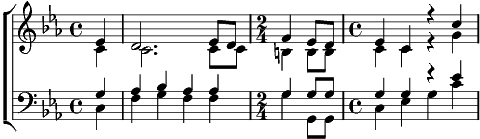

1. A l'aube la route s'étire, rivière de miel et d'azur
Sa courbe, sans hâte dérive,
Coupant les vergers d'un trait pur.
Là-bas, la route brillante s'en va dans le bleu du matin,
Ah !………
Là-bas la route de l'aube poursuit son voyage infini,
Son rêve……… du matin
2. Les prés, frémissants comme une onde,
Au bord de la route arrêtés,
Inclinent leurs vagues profondes,
Murs verts aux creux d'ombre bleutés.
Au loin, la route grisée s'en va dans les chants du matin,
Ah !………
Au loin, la route éblouie s'élance en avant vers le jour
Triomphe…… enchanté.
Ah !…